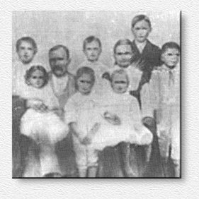

|
|
||||
Benjamin Petus Pegram and Mary
Elizabeth (Johnson) Pegram
and their children.
| This picture is apparently an artist sketch of the family, made in 1895, or 1896. Len, their oldest child, is not believed to be in it. He would have been seventeen, or eighteen, and already in the United States Navy. The tallest child is thought to have been the next oldest, Otis, about fifteen. The child standing between his parents, is probably Ernest, about age twelve. Claude is on the far right, about ten. The one on the far left is believed to be Dean. The yougest boy, Eve, is standing in front. Annie, four or five, is in her mother's lap, and Minnie Ola, about four, in her father's. I wish this were clearer since the daughter sitting on her father's lap has the most angelic face I have ever seen. The original is in the possession of the family of Willie Orbin Pegram. |
 |
Benjamin Petus Pegram and Mary Elizabeth (Johnson) Pegram
and their children.
This picture is apparently an artist sketch of the family, made in 1895, or 1896. Len, their oldest child, is not believed to be in it. He would have been seventeen, or eighteen, and already in the United States Navy. The tallest child is thought to have been the next oldest, Otis, about fifteen. The child standing between his parents, is probably Ernest, about age twelve. Claude is on the far right, about ten. The one on the far left is believed to be Dean. The yougest boy, Eve, is standing in front. Annie, four or five, is in her mother's lap, and Minnie Ola, about four, in her father's.
by Willie Orbin Pegram.